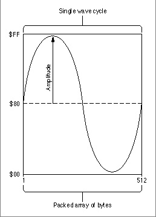
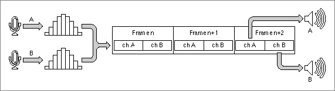

Important: Inside Macintosh: Sound is deprecated as of Mac OS X v10.5. For new audio development in Mac OS X, use Core Audio. See the Audio page in the ADC Reference Library.
Sound Data
The Sound Manager can play sounds defined using one of three kinds of sound data:
This section provides a brief description of each of these kinds of audio data and introduces some of the concepts that are used in the remainder of this chapter. A complete description of the nature and format of audio data is beyond the scope of this book. There are, however, numerous books available that provide complete discussions of digital audio data.
- square-wave data
- wave-table data
- sampled-sound data
Square-Wave Data
Square-wave data is the simplest kind of audio data supported by the Sound Manager. You can use square-wave data to generate a sound based on a square wave. Your application can use square-wave data to play a simple sequence of sounds in which each sound is described completely by three factors: its frequency or pitch, its amplitude (or volume), and its duration.The frequency of a sound is the number of cycles per second (or hertz) of the sound wave. Usually, you specify a sound's frequency by a MIDI value. MIDI note values correspond to frequencies for musical notes, such as middle C, which is defined to have a MIDI value of 60, which on Macintosh computers is equivalent to 261.625 hertz.
Pitch is a lister's subjective interpretation of the sound's frequency. The terms frequency and pitch are used interchangeably in this chapter.
A sound's duration is the length of time a sound takes to play. In the Sound Manager, durations are usually specified in half-milliseconds.
The amplitude of a sound is the loudness at which it is being played. Two sounds played at the same amplitude might not necessarily sound equally loud. For example, one sound could be played at a lower volume (which the user may set with the Sound control panel). Or, a sampled sound of a fleeting whisper might sound softer than a sampled sound of continuous gunfire, even if your application plays them at the same amplitude.
A sound's timbre is its clarity. A sound with a low timbre is very clear; a sound with a high timbre is buzzing. Only sounds defined using square-wave data have timbres.
- Note
- Amplitude is traditionally considered to be the height of a sound wave, so that two sounds with the same amplitude would always sound equally loud. However, the Sound Manager considers amplitude to be the adjustment to be made to an existing sound wave. A sound played at maximum amplitude still might sound soft if the wave amplitude is small.

Wave-Table Data
To produce more complex sounds than are possible using square-wave data, your applications can use wave-table data. As the name indicates, wave-table data is based on a description of a single wave cycle. This cycle is called a wave table and is represented as an array of bytes that describe the timbre (or tone) of a sound at any point in the cycle.Your application can use any number of bytes to represent the wave, but 512 is the recommended number because the Sound Manager resizes a wave table to 512 bytes if the table is not exactly that long. Your application can compute the wave table at run time or load it from a resource.
A wave table is a sequence of wave amplitudes measured at fixed intervals. For instance, a sine wave can be converted into a wave table by taking the value of the wave's amplitude at every 1/512 interval of the wave (see Figure 2-2).
A wave table is represented as a packed array of bytes. Each byte contains a value in the range $00-$FF. These values are interpreted as offset values, where $80 represents an amplitude of 0. The largest negative amplitude is $00 and the largest positive amplitude is $FF. When playing a wave-table description of a sound, the Sound Manager loops through the wave table for the duration of the sound.
Figure 2-2 A graph of a wave table

Sampled-Sound Data
You can use sampled-sound data to play back sounds that have been digitally recorded (that is, sampled sounds) as well as sounds that are computed, possibly at run time. Sampled sounds are the most widely used of all the available sound types primarily because it is relatively easy to generate a sampled sound and because sampled-sound data can describe a wide variety of sounds. Sampled sounds are typically used to play back prerecorded sounds such as speech or special sound effects.You can use the Sound Manager to store sampled sounds in one of two ways, either as resources of type
'snd 'or as AIFF or AIFF-C format files. The structure of resources of type'snd 'is given in "Sound Resources" on page 2-74, and the structure of AIFF and AIFF-C files is given in "Sound Files" on page 2-81. If you simply want to play short prerecorded sampled sounds, you should probably include the sound data in'snd 'resources. If you want to allow the user to transfer recorded sound data from one application to another (or from one operating system to another), you should probably store the sound data in an AIFF or AIFF-C file. In certain cases, you must store sampled sounds in files and not in resources. For example, a sampled sound might be too large to be stored in a resource.Regardless of how you store a sampled sound, you can use Sound Manager routines to play that sound. If you choose to store sampled sounds in files of type AIFF or AIFF-C, you can play those sounds by calling the
SndStartFilePlayfunction, introduced in the chapter "Introduction to Sound on the Macintosh" in this book. If you store sampled sounds in resources, your application can play those sounds by passing the Sound Manager functionSndPlaya handle to a resource of type'snd 'that contains a sampled sound header. (TheSndStartFilePlayfunction can also play'snd 'resources directly from disk, but this is not recommended.)There are three types of sampled-sound headers: the standard sound header, the extended sound header, and the compressed sound header. The sound header contains information about the sample (such as the original sampling rate, the length of the sample, and so forth), together with an indication of where the sample data is to be found. The sampled sound header can reference only buffers of monophonic, 8-bit sound. The extended sound header can be used for 8- or 16-bit stereo sound data as well as monophonic sound data. The compressed sound header can be used to describe compressed sound data, whether monophonic or stereo. Data can be stored in a buffer separate from the sound resource or as part of the sound resource as the last field of the sound header.
You can play a sampled sound at its original rate or play it at some other rate to change its pitch. Once you install a sampled sound header into a channel, you can play it at varying rates to provide a number of pitches. In this way, you can use a sampled sound as a voice or instrument to play a series of sounds.
- Note
- The terminology sampled sound header can be confusing because in most cases the sound header (and hence the
'snd 'resource) contains the sound data as well as information describing the data. Also, do not confuse sampled sound headers with sound resource headers. Sampled sound headers contain information about sampled-sound data, but sound resource headers contain information on the format of an entire sound resource.Sampled-sound data is made up of a series of sample frames, which are stored contiguously in order of increasing time. For noncompressed sound data, each sample frame contains one or more sample points. For compressed sound data, each sample frame contains one or more packets.
For multichannel sounds, a sample frame is an interleaved set of sample points or packets. (For monophonic sounds, a sample frame is just a single sample point or a single packet.) The sample points within a sample frame are interleaved by channel number. For example, the sound data for a stereo, noncompressed sound is illustrated in Figure 2-3.
Figure 2-3 Interleaving stereo sample points

Each sample point of noncompressed sound data in a sample frame is, for sound files, a linear, two's complement value, and, for sound resources, a binary offset value. Sample points are from 1 to 32 bits wide. The size is usually 8 bits, but a different size can be specified in the
sampleSizefield of the extended sound header (for sound resources) or in thesampleSizefield of the Common Chunk (for sound files). Each sample point is stored in an integral number of contiguous bytes. Sample points that are from 1 to 8 bits wide are stored in 1 byte, sample points that are from 9 to 16 bits wide are stored in 2 bytes, and so forth. When the width of a sample point is less than a multiple of 8 bits, the sample point data is left aligned (using a shift-left instruction), and the low-order bits at the right end are set to 0.For example, for 8-bit noncompressed sound data stored in a sound resource, each sample point is similar to a value in a wave-table description. These values are interpreted as offset values, where $80 represents an amplitude of 0. The value $00 is the most negative amplitude, and $FF is the largest positive amplitude.
Each packet of 3:1 compressed sound data is 2 bytes; a packet of 6:1 compressed sound is 1 byte. These byte sizes are defined in bits by the constants
threeToOnePacketSizeandsixToOnePacketSize, respectively.